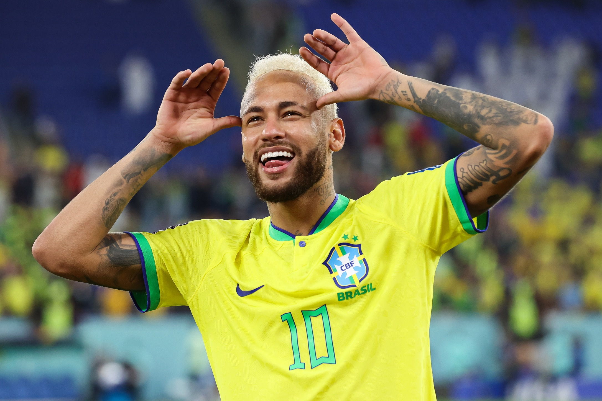

Tuntud Sportlased

CRISTIANO RONALDO
Ründaja • Portugal
7
Väravad:950+
Mängud:1200+
Viiekordne Ballon d'Or võitja, jalgpalliajaloo parim väravakütt ja tõeline UCL-i kuningas.

LIONEL MESSI
Ründaja • Argentina
10
Väravad:900+
Mängud:1150+
8-kordne Ballon d'Or võitja ja maagiline mängujuht, kelle karjääri tipuks sai 2022. aasta MM-kuld.

NEYMAR Jr.
Ründaja • Brasiilia
10
Väravad:400+
Mängud:700+
Brasiilia koondise läbi aegade parim väravakütt. Tuntud oma fenomenaalse tehnika ja loovuse poolest.

KYLIAN MBAPPÉ
Ründaja • Prantsusmaa
9
Väravad:370+
Mängud:550+
Maailmameister ja uue põlvkonna jalgpalli suunanäitaja, kelle pidurdamatu kiirus teeb temast kaasaegse mängu superstaari.